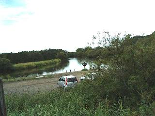

ものも言わずに布団から飛び出して、はだけた浴衣の裾もなんのその、電気も点けないで窓の外を覗いてみると、大きいのとちょっと小さめのシマフクロウが池の止り木にいます。
じっと見ていますと、どうやら親フクロウが魚の取り方を教えているような様子で、小さい方のフクロウがじょぼっ！と池の中に飛び込んで、きょろきょろと辺りを見回していますが、寝る前に見ていた親フクロウのように止り木までは飛び上がれず、結局は私達が覗いている池の手前に上がって魚を食べはじめました。
最近「不苦労」というあて文字から、苦労がないということで人気のあるフクロウですが、シマフクロウは「島梟」と書き、この「島」というのは北海道を示しているのだそうで、アイヌの言葉では「コタンコロカムイ（村の守護神）」と呼ばれ、大変崇拝されていたのだそうですが、現在では６０～１００羽くらいしか日本には生息しておらず、国の天然記念物に指定されていると言うことです。
原始のままの自然が残されている、人が近づかないところでしか住まないと言われる…
そんな貴重なフクロウを、こんなに間近なところから自然体のままのの姿で見られるとは、ヒデキでなくても感激します。(≧ω≦
そんなこんなと、まあ 帰ってきてからシマフクロウについてあちこちのホームページを調べておりましたが、なんとシマフクロウの鳴き声を聞けるところを発見しました！
ここをクリックし、「シマフクロウの鳴き交わし」をクリックしてみましょう。
「dosanko」さんよりリンクさせて頂きました。
翌朝は前日と同じく７時から朝食、８時出発ということで、５時に起きて近くを散歩しようなどと言っていたのですが、とても起きる自信がないと感じたので「寝ていたら放っておいて」と言って布団に入りましたが、ちょっと目を閉じて
「パン!」
と手を叩かれて目を開けたら朝になっていた…というくらい、寝た覚えもなく目を覚ましてみますと二人の布団はもぬけの空で、
はっ！と思い出すことがあり、携帯を取りだしてメールを送ってみるがどうやら圏外になっているようで届きませんでした。
仕方がない生ゴミを捨てて貰うのは諦めよう…（ _ _ ;
身支度を整えているところへ二人が帰ってきまして、私達の部屋のとなりに見えていた鳥のお食事処を備えたテラスのあるレストランで、家庭的な朝食をいただきながら話を聞いていると、彼女たちは橋を渡って川の向こう側に行ってきたようで、お風呂から見た限りでは川の向こう側は林か山になっているようでしたが、実は道路が通っていまして、カンテラの灯のもとで大笑いをしながら入っていた露天風呂が丸見えだったそうで、いくら車の通りが少ないとはいえ知らぬが仏とはよく言ったものです。（＾-＾;
帰ってきてから調べてみますと、養老牛温泉は標津（しべつ）川上流の深い森に囲まれた原生自然の中の温泉だそうで、泉質は食塩泉で婦人病や腎臓病などに効用があり、現在は四軒の旅館が営業中だそうです。
私達が泊まった旅館は「幸せの黄色いハンカチ」「遙かなる山の叫び声」「男はつらいよ・夜霧にむせぶ寅次郎」などの映画ロケで、山田洋二監督をはじめスタッフが利用したところだそうで、高倉健さんや倍賞智恵子さんも泊まったことがあるというところであったようです。
予定通りバスは出発し、シマフクロウのことで話しは持ちきり…私達がバタバタと部屋を出入りしてフクロウを追跡調査していたことも、夜の１０時ごろに池でフクロウが食事をしていたことも誰も気が付かなかったようで、外に露天風呂があったことさえ知らなかった人が多かったようでちょっとビックリ。
昨日ノロッコで降り立った塘路駅まで戻るのですが、途中何頭かの野生の鹿が林の近くで食事をしているところを見かけたり、遠くからですが、営巣している(渡り鳥ではなく、その近くに住み着いている）二羽の丹頂鶴も見ることができました。
塘路湖の近くの木々は赤く変色するものが少なく、黄色一色に染まるのだそうですが、気のせいか昨日より一段と黄色くなっていたように見えました。
ちなみに、塘路湖は釧路湿原国立公園内ではもっとも大きな湖であり、カヌーやキャンプなどのアウトドアが楽しめ、達古武湖は大昔の海の跡であった海跡湖で、こちらもカヌーやオートキャンプがお勧めとのことです。
塘路駅の近くのとあるお店で長靴とライフジャケットを借りて、長い髪を後ろでひとつに束ねたお兄さんが運転するバスに乗り換え、コッタロ湿原近くの釧路川へ向かいます。
この日は、ラフトボートで川下りを楽しみますが、川下りは川下りでも船頭さんが櫓を漕ぎながら歌をうたったり案内をしてくれるものではなく、どちらかというとスポーツ的な川下りです。

左の写真は釧路川ですが、ノロッコ号やバスの中から見たところにはカヌーもちらほら出ており、うねる川をゆったりと楽しんでいました。
折角カメラも双眼鏡も首にぶら下げて準備をしたにもかかわらず、カメラなどは落とす可能性があるというので、双眼鏡のみを首にぶら下げてバスを降りますと、スタッフのお兄さんから大きなご飯しゃもじのようなオールを渡され、六人ずつのグループに分かれてボートに乗り込みます。
ラフトボートというのは楕円形のゴムボートだと思って頂ければいいかと思いますが、普通はボートに乗るといえば、中にある椅子のようなところに腰をかけるものなので、ちょうど二人ぐらい座れそうな広さのそこへ、当然のように６人ともボートの中に座り、最後に乗り込んだネイチャーガイドのお兄さんは船縁（ふなべり）に座りました。
船頭さんは後ろで立っているものだという頭がありますので、それが普通かなと思っていたのですが、なんと私達も船縁に座るのだそうで、お上品に両足を揃えて…などということは言っておれず、両方に開いた足の先をその椅子らしきものの下に片方ずつ潜り込ませて、それで身体を支えるのです。
つまり、私達は空気でふくらんだ大きな浮き袋のようなボートの縁に座って、両手はオールを持っているので足で掴まっているという状態なんですね。
それでライフジャケットなんだ…と一人納得しながらも、落ちたら水は冷たいだろうなぁ…双眼鏡はダンナからの借り物だから弁償かなぁ…などと考えておりました。（＾－＾；
全員がやっと定位置に座り直して、ボートが川の中に押し出され、まずはオールの使い方を教えてもらい、ちょっと漕ぎ方の練習をし、流れに押し流されながらも川の中程までボートを漕ぎ進めます。
「僕が『伏せてー!』と言ったら頭をボートの中に伏せてください」
と、これも練習しました。（＞＜
ゆったりとではありますが川は流れており、放って置いてもボートは流れて行くのですが、それではボートの向きが変わってしまうので、お兄さんが一本のオールで方向を保っているわけですが、木の枝などがせり出していた場合などはそれを迂回するために全員で漕がなければならないことがあり、それが潜れるほどならば伏せて回避するということです。
鮭やニジマス、イトウ(魚ヘンに鬼と書くのだそうです）などが生息しているそうですが、細かい藻が沢山発生しているそうで残念ながら川の中の様子は見られませんでした。
が、川べりの土のところにはよく見るとたくさんの穴が開いており、カワセミやミンクなどの巣になっているそうで、そこからちょろっと顔を出している動物でもいれば最高なのですが、私達があまりにも賑やかなのでみんなひっそりと穴の中で身をひそめていたのかもしれません。（- - ;
「あ! 何か魚が泳いでいる」
と、目ざといＭさんが行く手を指さし、
「ああーあれは…」
と、ガイドのお兄さんが説明をします。
「泳いでいるのではなくて、川が流れているんですよ」
川底から生えている草か何かがそこにあって、流れのせいで水がかき分けられているのであって、魚が泳いでいるわけではないとのことでした。
ちょっと静かにしてみますと、様々な鳥の鳴き声があちこちから聞こえてくるので、鳴き声からなんの鳥であるのかを説明しながらも、合間にどこから来たのか？とか何処を見てきたのか？などの質問され、私達がこんなところに泊まってシマフクロウを見てきたと話しますと、一度も見たことがないそうで羨ましがっていました。
４０分くらいの時間でしたが、この際ニワトリでも猫でもいいからみつけてやろうと、両側の岸をあっちを見たりこっちを見たりしている間に、もう終着地点に着いてしまい、一番最後に到着したボートの人たちが何かをみつけたようで、みんな興奮さめやらぬ口調で目を輝かせていましたが、それがなんであったのか自分の目で見たものではないということはこんなもので、すっかり忘れてしまいました。
一般の車の乗り入れが禁止されている国立公園の中は、草一本、石ころひとつ持ち出すことができないそうで、動物たちは安心してそこに居住しているのかもしれません。
私達は往きに乗ってきたバスで塘路へもどりますが、さて、ボートはどうなるのか？と見ていましたら、私達と同様にトラックの荷台に乗せられて、また元の場所に戻っていくようでした。
長靴とライフジャケットを返して迎えに来たバスに戻ってみますと、途中でキタキツネを見かけたそうで、それがちょうど川下りのコースであったとか…
「見ませんでしたか？」とガイドさんに聞かれましたが、キタキツネどころか川にいそうな鴨の一羽さえも見ていない私達は、ぶん ぶんと首を振るばかりで、何やらを見た人たちだけが盛り上がっておりました。（＾－＾；
黄色く色づきはじめた達古武湖を眺めながらバスは釧路市街へと戻り、最後の見学地というよりはお決まりのショッピングコースということで、道内屈指の大型市場といわれる「和商市場」と「朝市」へ…
北海道のちょっと大きな土産物店へ行くと、必ず売っているのが蟹や鮭、昆布類のたぐいですが、なんとか横町みたいなところにギッシリと小さな店が並んでいて、あれこれ試食をしながら買い物をするといったところには行ったことがありますが、和商市場のようにひとつ屋根の下に沢山の店(百店ほどあるそうです）が並んでいるところは始めてです。
海産物を並べる店がほとんどですが、八百屋さんや総菜屋さんや食事をする店がちらほらと混じっており、まるで卸売市場のようになんでも安いんですよぅ…
あれもこれも…と欲しい物ばかりなのですが、帰り着いた空港から持って帰ることを考えると、めったやたらと買い込むこともできず、駆け足で一通り見て回って、まずは腹ごしらえとばかりに物色をはじめました。
ここでの名物は「勝手丼」といって、まずは大中小とあるご飯を買いますと、お盆に乗せたご飯を渡されますので、それを持っていろいろな店を見て回ると、小さなトレイに入れられた刺身やイクラなどがあり、食べたい物を欲しいだけ買って、ご飯の上に乗せて食べるのです。
コロッケや海老フライなどもありましたが、さすがにおひたしとか煮物などはなく、魚介類のオンパレードでした。
中のご飯が120円、蟹汁が100円、あまり聞いたことのない名前の白身(と言っても、透き通ってない方の白身）の刺身が4切れくらい入ったものと、イカと秋刀魚と鮭が盛り合わせてある物を買っても500円がちょっと出たくらいで、ご飯がちょっと温かかったので私達は乗せないでそのまま普通に食べましたが、大満足でした（＾_＾
食べるところはところどころにテーブル席があり、お箸も醤油もそこに置いてあるので勿論何処で食べてもいいのですが、中には食堂のようにカレーやうどん、カツライスなどを売っているお店もあるので、そこではちょっとまずいかも…（＾_＾；
腹ごしらえができたところで、前もって目星を付けて置いたお店をもう一度じっくり見ながら買い物です。
干した鱈を叩いて唐辛子をふりかけた物があったので、先ずは一品。
鮭も蟹も美味しそうで、お正月に向けて数の子なども欲しかったのですが、あれこれ迷った挙句、筋子を一腹分買ったのはいいのですが、送ってもらうとすれば航空便でなければいけないとのことで、この送料が高く付いてしまい、折角2000円ちょっとで買っても名古屋で買ったのと同じくらいの金額になってしまうので、頑張って持って帰ることに決めたのですが、これがまた保冷剤(一個百円）を入れて発泡スチロールの箱に入れて貰うと、大きな物になってしまうので、保冷剤を二つ買って筋子をサンドイッチ状に挟んで新聞紙でしっかり包んで貰い、なんとか旅行カバンの底に収まりそうな大きさになりました (>_<)
予定では布製のゴロゴロの付いたカバンを引いてくるつもりだったのが、出発時に雨が降るということだったので、ちょっと大きめのカバンとリュックだけにし、いつものようにそこに収まりきるだけしかお土産を買わないようにしましたが、ゴミ捨て用のビニール袋をかぶせてでもゴロゴロの付いたカバンを持ってくるべきだったと後悔しました（；＾＾A
集合時間までにちょっと時間がありましたので、近くの朝市へも行って来ましたが、こちらは入口の右側に花屋さんがあり、左側に八百屋さんがありましたが、時間があるとはいうもののほんの10分程度なので、その奥がどうなっていたのかはまったく見ていませんでした。
が、その八百屋さんに並んでいる物が、まあぁ…トウモロコシもかぼちゃもいい顔をしていまして、見たことのないようなものも並んでいたりして、あっち向いて こっち向いて なんのかんのとやっていましたらあっという間にバスに戻る時間になっていました。
そんなこんなで大変ラッキーな今回の旅行も終わってしまい、私達は帰路に就いたわけですが、名古屋空港からバスに乗ろうと停留所に行ってみますと、相部屋のYさんがそこにおり、よくよく聞いてみますとなんと私の家のある隣の区に住んでおられるとかで、同じバス、同じ地下鉄、また同じバスに乗って私が先の停留所で下車するまで、ずう～っとお話しして帰ってきました。
予想外のアクシデントで旅行に行けなかったJさんは、夢の中で天の川が流れているのを見ていたそうで、今回は本当に残念でしたがまだまだチャンスはありますので、またご一緒しましょうねェ。
作成:2004-09-29
コメントはこちら